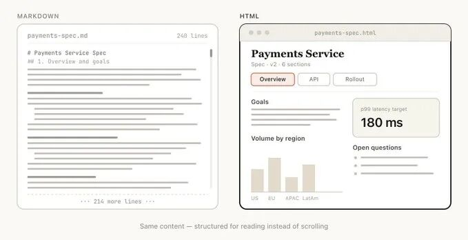
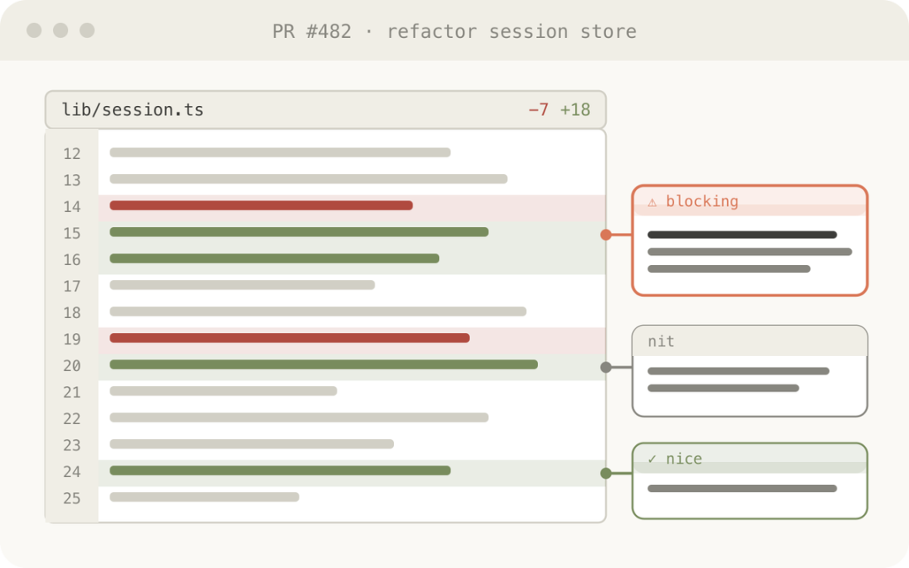

Claude Code的Thariq在X上发表了一篇雄文，叫《Using Claude Code: The Unreasonable Effectiveness of HTML》。翻译过来的大白话意思是，Claude Code + HTML的组合是一种远远超出预期的强大。 不仅是因为文章本身定义了一种新的范式，还因为这文章的标题，其实非常有说法，不是随便拍脑袋取的。1960年，物理学家Eugene Wigner 发表著名论文《The Unreasonable Effectiveness of Mathematics in the Natural Sciences》，翻译过来的意思是，数学在自然科学中不合常理的威力。这篇论文探讨了为什么数学这种纯抽象工具能如此精准描述物理世界。然后到2009年，Google的三位研究员，Halevy、Norvig、Pereia 借用了这个标题，发表了《The Unreasonable Effectiveness of Data》这篇论文，意思是，数据不可思议的有效性。同时，这篇论文也成为了大数据以及统计机器学习时代的标志性论文。 所以，Thariq借了这个标题之后，这篇文章在X上也爆了。。。我写的时候这文章已经两百万阅读了。。。 作者认为Markdown有非常多的优势，简单、轻量、可移植、结构性强，甚至Claude也非常擅长写Markdown文档，都能在里头用ASCII字符画图。 但问题在于，AI的能力越来越强，它产出的内容也越来越复杂。Markdown 也开始出现了瓶颈： Markdown对于复杂的表格、设计稿、流程图这些都不太行。毕竟就是个纯文本的文件。 分享也非常麻烦，你要发给别人的话，只能是发送附件给别人。 还有就是你没法在Markdown 文档里一点点调参数，看看效果，显得非常的呆逼。而且，随着AI能力越来越强，已经很少有人自己手动编辑这些文档了，都是让Claude 去改。 Markdown本身最大的优势，容易手动编辑修改，正在消失。 第一点，HTML能做的事情远比Markdown多。它不仅能做Markdown能做的那些标题、段落、格式化，还可以包含表格、CSS样式、SVG、代码片段的直接交互演示、Javascript+CSS交互带来的动效展示，还有一些复杂的可视化内容。 如果只能用Markdown，很多内容的表达都会受到限制。 Claude可以用标签页、侧边栏导航、插图索引等一系列方式来组织一个复杂的文档，让你快速定位到想看的部分，甚至还能把移动端响应也给做了，让你在手机上看也一样舒服。 Markdown本身因为是一个静态的文本文件，它分享的主要方式就还得是发送附件给对方；但HTML就完全不一样，把文件上传到S3或者任何能静态托管的地方，就可以发一个链接就行。对方点开就能看，这一切都是非常原生的体验。 还有一个优势是，对于HTML来说，文档可以是活的。 你可以让Claude在HTML里加上滑块、开关、可拖动卡片，让你直接动手调整参数、重新排序、预览效果等等等等。 等于就是HTML能让原本一个静态的文本文件变成一个可以操作的界面。 

 Thariq 认为最主要的问题有两个，一个是HTML通常因为更丰富的视觉效果而花费更多的token，还有一个是版本管理很难。 相比于看Markdown的diff，看HTML的diff非常难受，有很多噪音。 第一个是方案设计与探索。也就是我们经常说的，脑暴。 Thariq 会经常让Claude设计不同的方案，比如代码功能的实现，还有视觉方案设计等。 特别是，Claude Design 本身就是基于HTML的。 用在看PR的时候。Thariq 会让Claude 把PR的diff 以内联批注的形式输出到HTML，按严重程度用颜色标记附上模块依赖图、流程说明。
Thariq 认为最主要的问题有两个，一个是HTML通常因为更丰富的视觉效果而花费更多的token，还有一个是版本管理很难。 相比于看Markdown的diff，看HTML的diff非常难受，有很多噪音。 第一个是方案设计与探索。也就是我们经常说的，脑暴。 Thariq 会经常让Claude设计不同的方案，比如代码功能的实现，还有视觉方案设计等。 特别是，Claude Design 本身就是基于HTML的。 用在看PR的时候。Thariq 会让Claude 把PR的diff 以内联批注的形式输出到HTML，按严重程度用颜色标记附上模块依赖图、流程说明。 帮我审查这个 PR，生成一个 HTML 说明文件。把实际的 diff 渲染出来，加上行内批注，按严重程度着色，再画出受影响模块的关系图。



还有一个是研究、报告、学习。
这一类用途其实我觉得已经显现出来了。
包括大家看到之前很火的HTML格式的PPT； 或者把一篇好的论文、博客内容通过HTML网页形式展现出来，更加便于理解。
示例的Prompt：
我搞不清楚我们这个 rate limiter 实际上是怎么跑的。你去看一下相关代码，然后生成一个单页 HTML 说明文档：画出 token bucket 的流程图，挑 3–4 段核心代码并做注释，最后加一个 gotchas/注意事项区。整体设计要让人只看一遍就能理解。
那该如何上手呢？
Thariq特别强调，你不需要搞什么复杂的自定义指令或Skills。
直接对Claude Code 说就完事了，
比如：用HTML文件展示、做一个HTML artifact、输出为一个HTML文件等等。
关键是想清楚你要这个文档实现什么样的功能，然后描述给你的Agent。
当然，用多了之后，你就可以慢慢沉淀自己的一套风格，但一开始真的不用想太多。
最后写点
Thariq 在文章里说了一段我觉得其实是非常值得思考的话。
他说，他使用HTML的真正原因是，这让他感受到他和Claude之间更加的紧密了。
因为模型的能力越来越强之后，他自己不会再去认真的阅读那些长文档，所以很多时候只能让Claude来决定。但切换到HTML之后，他前所未有的感受到自己就存在于那样一个工作循环里。
我觉得这不就是human in the loop 么。
我自己其实也有一个很强力的感受是，我们可能真的需要重新定义和AI协作输出格式这件事。
Markdown是好的格式，但它适合人写给人看的场景。
当AI成为生产者，而人是决策者的时候，我们就需要一种能承载更复杂信息、更容易浏览和交互的载体。
HTML则刚好满足了这些需求。
有意思的是Markdown 本身又非常适合写成HTML。
来自Markdown与HTML的两大头号“毒唯”的对话。
以上，
若觉得内容有帮助，欢迎点赞、推荐、关注。别错过更新，给公众号加个星标⭐️吧！祝您在2026年里天天开心，快乐，身体健康，万事如意！期待与您的再次相遇～